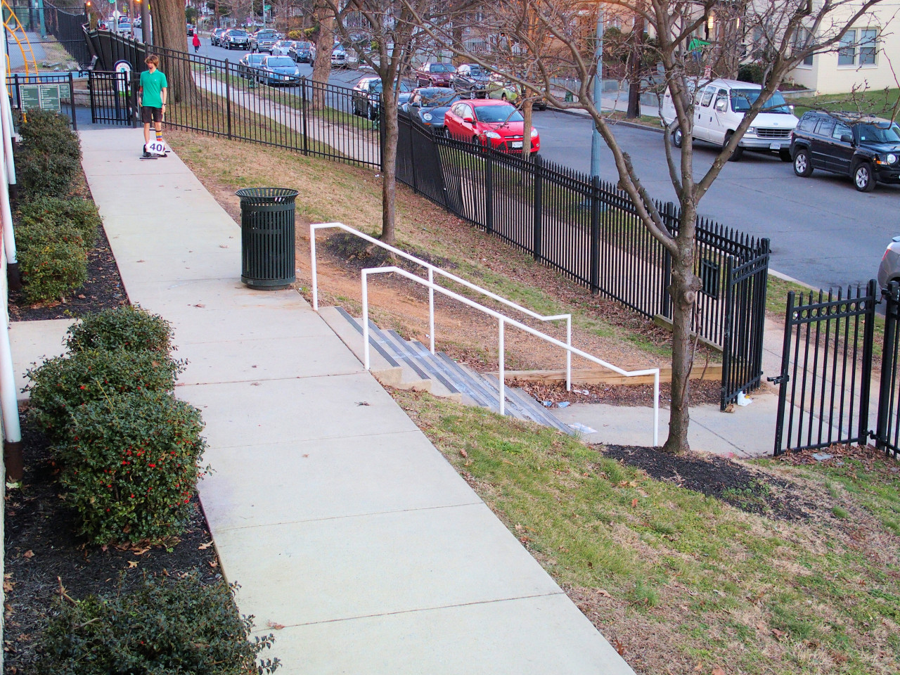
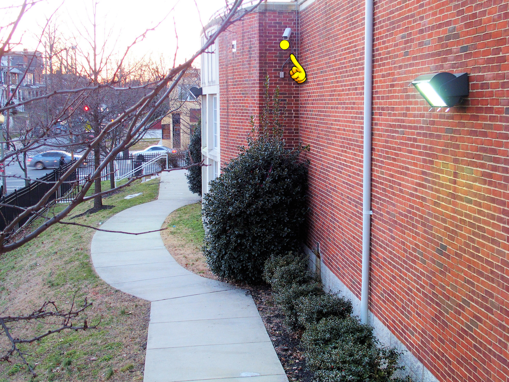
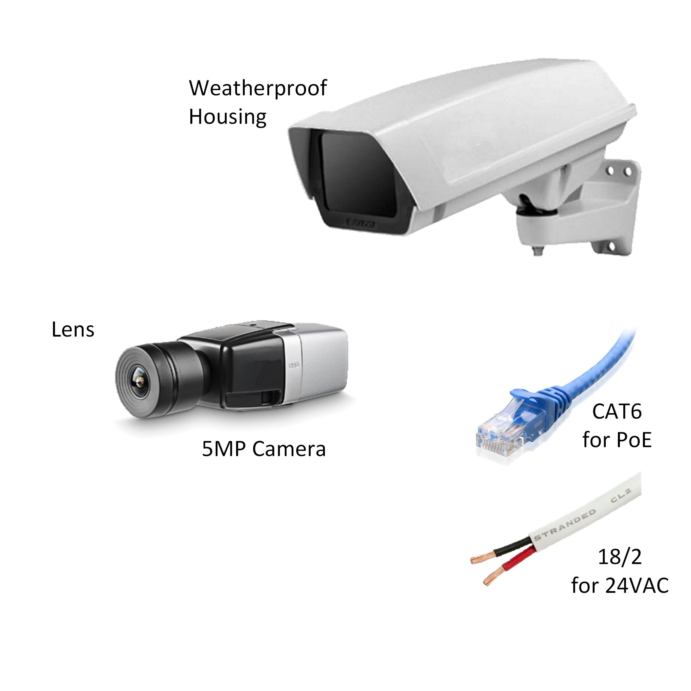

WACH
IS TO
SIGHT
AS
MACH
IS TO
SOUND.
SECURITY GUARD
Designers typically treat each camera as if it were a security guard watching over their post.
CAMERAS ARE NOT EYES
Human eyes have a resolving power of approximately five hundred seventy-six million pixels. Modern security cameras have between two and five million pixels. Even the best security camera, positioned where a guard might stand, will only be able to resolve one percent of the detail the guard could see.
Missing ninety-nine percent of the detail creates an expectation gap. Our core mission is eliminating this gap.
IMMENSE SCENE DEPTH
Wach1design images provide tremendous usable depth. For example, the distance between Subject 1 and Subject 2 is 900 ft. The distance between Subject 1 and the Prison Fence is 2,400 ft. All props are in identical locations in both images. The top image shows how a typical camera design would render the scene, the bottom image shows a Wach1design.
OPTICAL HYDRAULICS
Wach1design has harnessed the power of Optical Hydraulics®. Just as fluid hydraulics allows a single machine to do the work of many individual workers, Optical Hydraulics® allows one camera to do the work of many. The images on the next page show coverage of a 75,000 sq. ft. parking lot. A typical design requires nine cameras. A Wach1design allows the entire scene to be covered by a single camera
Pre-Industrial Revolution Company profit based on maximizing number of billable hours
Pre-Wach1design Revolution Company profit based on maximizing number of cameras sold and/or developed.
Post-Industrial Revolution Company profit based on maximizing operational efficiency. Fluid Hydraulics
Post-Wach1Design Revolution Wach1design's profits are based on maximizing surveillance design efficiency Optical Hydraulics®
INCOHERENT VIEWS
Traditional design results in disjointed views which make it difficult for the SOC (Security Operations Center) officers to gain immediate situational awareness
COHERENT VIEWS
In addition to the obvious savings in camera and cabling cost, Wach1design provides a coherent and harmonious scene for officers in the SOC.
SCENE BONDING
Wach1design’s unique scene bonding allows for unprecedented views, providing instant clarity and situational awareness, in both live and archived video for your security team.
COST SAVING DESIGN
At Wach1design our goal is effective and efficient design. This is a typical design that required 44 cameras to cover the entrances to 11 warehouses.
Wach1design was able to reduce the camera count to 30 cameras. Even with the camera count being reduced by 32%, the useful coverage was more than doubled.
TRADITIONAL DESIGN COVERAGE
About 95% of the security cameras that are installed provide less than 30,000 sq. ft. of useful coverage. (30,000 sq. ft. is approximately 60% of a single football field.)
The smaller the coverage area provided per camera, the greater the number of cameras required to secure the entirety of your campus.


WACH1DESIGN COVERAGE
About 95% of the security cameras that are installed provide less than 30,000 sq. ft. of useful coverage. (30,000 sq. ft. is approximately 60% of a single football field.)
The smaller the coverage area provided per camera, the greater the number of cameras required to secure the entirety of your campus.


DELIVERABLES
Camera View This is what will be displayed in the SOC once the system is deployed.
Camera Viewshed The viewshed allows you to see the area covered by the camera.The specified field-of-view allows the integrator to calculate the correct lens for the camera.

Installation The location inforamtion is useful for both the architectural review team and the installation crew. If the camera is to be installed on an existing building, the building will be in the photograph.
Typical Equipment This is useful for understangint how the camera may look once it is deployed. It also shows the installation crew the cabling which is needed at that particular location.
UNDERSTANDING THE CAMERA VIEWSHED
In a perfect world one would like to have the entire scene provide identification (green) level detail. While this is possible, it is likely to be cost prohibitive. Our intent is to make sure you appreciate both the advantages and limitations of security cameras. We strive to understand your security needs then design to your specifications.
Observation
Viewer can generally discern subject's gender, skintone, clothing and activity
Recognition
Viewer can generally discern known subects in the scene
Identification
Viewer may be able to discern unknown subjects in the scene
Unseen area between camera and scene
Between 12.5 and 20 Pixels/ft Resolution
Between 20 and 50 Pixels/ft Resolution
Greater than 50 Pixels/ft Resolution
LIGHT LEVEL SURVEY
Cameras need a minimum level of illumination to be useful at night. A light level survey is the most effective way of determining where you may need additional lighting. The parking lots on the right illustrate one of our lighting surveys. The colored spheres indicate light levels. These levels are explained below.
Highly Reflective Surfaces
Light Colored Clothing
Motion & Human Forms
Actions & Details
Wach1design, LLC
1315 West Main St. Suite B
Lexington, KY 40508-2008
(859) 667-4250